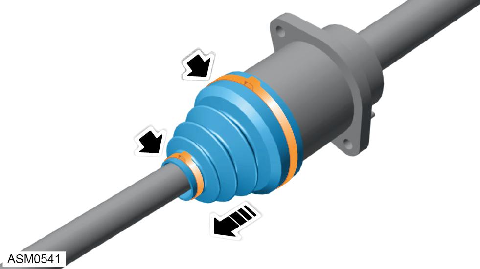
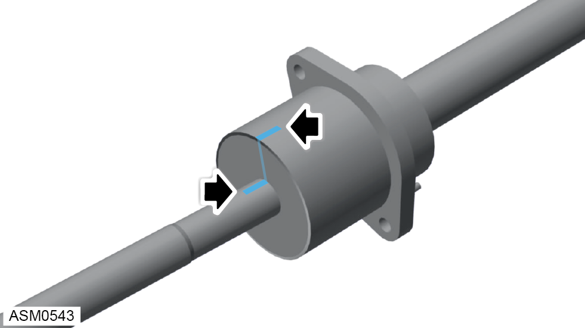
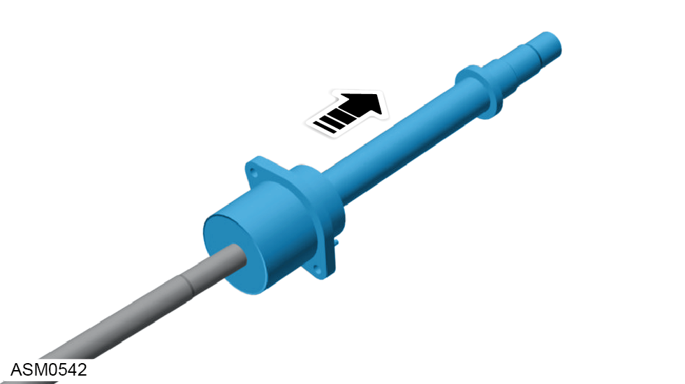
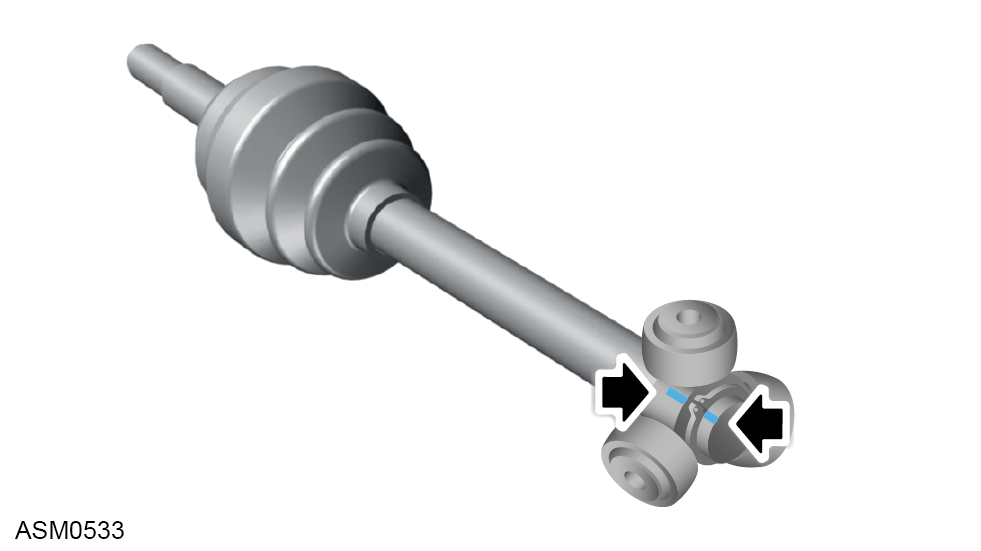
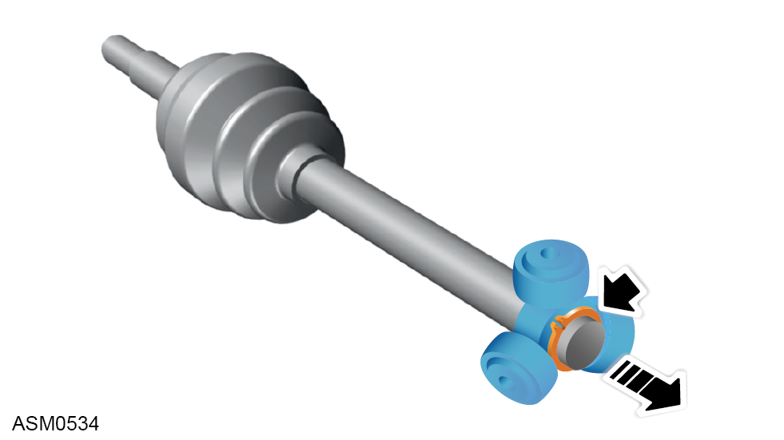
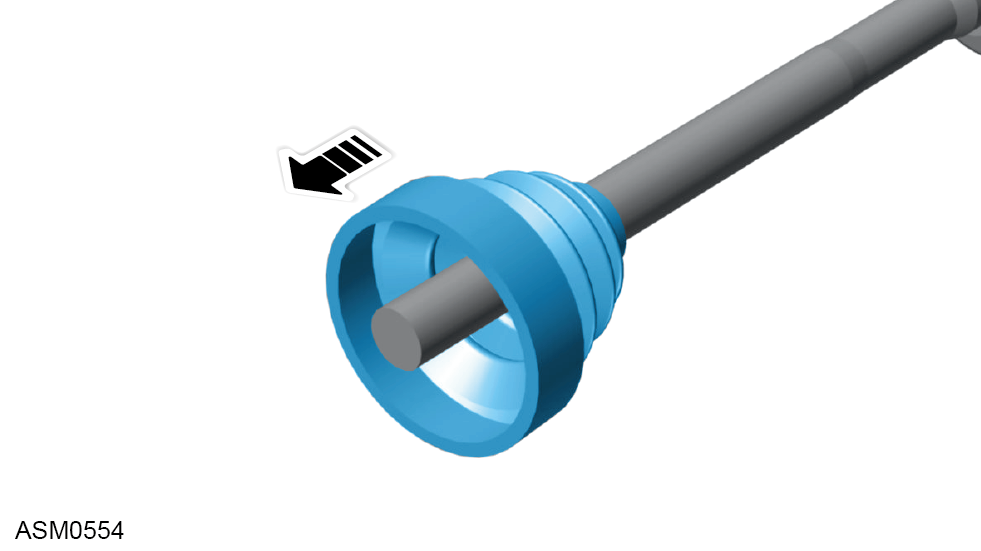

CV Joint Assembly - Inboard Gaiter - Right Side - V6
Print
Operation Code: 47.15.08-02
Removal
- Remove driveshaft assembly. Refer to procedure.

- Remove clips (x2) securing inboard constant velocity (CV) joint gaiter to driveshaft and pull away gaiter.

- Match mark driveshaft and CV joint outer body.
- Using a press, remove dust shield from inboard
end of driveshaft.
- Remove circlip from outboard face of bearing housing.

- Remove CV joint outer body.

- Match mark driveshaft and CV joint spider.

- Remove snap ring from end of driveshaft and remove CV joint spider.

- Remove CV joint gaiter.
Installation
- Installation is the reverse of removal procedure except for the following:
NOTE: Use special press tool T000T1439F to press bearing
dust shield onto driveshaft.
- Renew CV joint grease for inboard and outboard CV joints.
 CAUTION: The supplied grease must be used in order to prevent damage or premature wear to the CV joints.
CAUTION: The supplied grease must be used in order to prevent damage or premature wear to the CV joints.
NOTE: Inboard joint requires 200g of NKG302 grease.
NOTE: Outboard joint requires 180g of NTG2218-M grease.